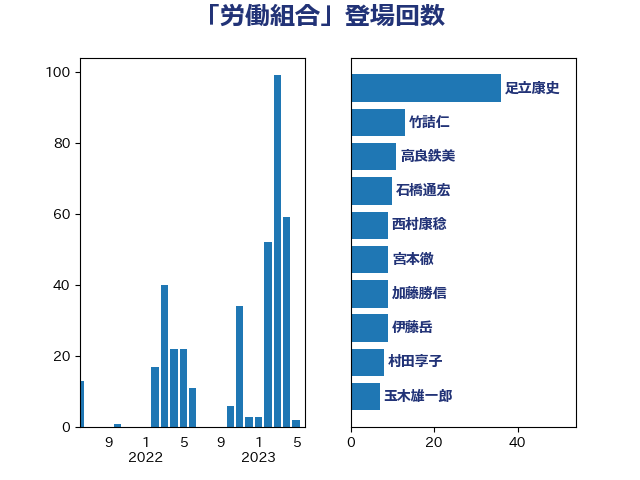

単語「労働組合」

| 足立康史 | 日本維新の会 | 36 回 |
| 竹詰仁 | 国民民主党 | 13 回 |
| 高良鉄美 | 無所属 | 11 回 |
| 石橋通宏 | 立憲民主党 | 10 回 |
| 西村康稔 | 自由民主党 | 9 回 |
| 宮本徹 | 日本共産党 | 9 回 |
| 加藤勝信 | 自由民主党 | 9 回 |
| 伊藤岳 | 日本共産党 | 9 回 |
| 村田享子 | 立憲民主党 | 8 回 |
| 玉木雄一郎 | 国民民主党 | 7 回 |
| 田村まみ | 国民民主党 | 6 回 |
| 櫻井周 | 立憲民主党 | 6 回 |
| 山添拓 | 日本共産党 | 6 回 |
| 井上哲士 | 日本共産党 | 6 回 |
| 田村智子 | 日本共産党 | 5 回 |
| 森本真治 | 立憲民主党 | 5 回 |
| 柴愼一 | 立憲民主党 | 5 回 |
| 小林鷹之 | 自由民主党 | 5 回 |
| 重徳和彦 | 立憲民主党 | 4 回 |
| 福島伸享 | 無所属 | 4 回 |
| 橋本岳 | 自由民主党 | 4 回 |
| 松野博一 | 自由民主党 | 4 回 |
| 小沢雅仁 | 立憲民主党 | 4 回 |
| 宮本岳志 | 日本共産党 | 4 回 |
| 倉林明子 | 日本共産党 | 4 回 |
| 野間健 | 立憲民主党 | 3 回 |
| 紙智子 | 日本共産党 | 3 回 |
| 竹内譲 | 公明党 | 3 回 |
| 浜野喜史 | 国民民主党 | 3 回 |
| 根本匠 | 自由民主党 | 3 回 |
| 後藤祐一 | 立憲民主党 | 3 回 |
| 青山大人 | 立憲民主党 | 2 回 |
| 金子恭之 | 自由民主党 | 2 回 |
| 芳賀道也 | 国民民主党 | 2 回 |
| 福島みずほ | 社会民主党 | 2 回 |
| 礒崎哲史 | 国民民主党 | 2 回 |
| 浜口誠 | 国民民主党 | 2 回 |
| 浅野哲 | 国民民主党 | 2 回 |
| 沢田良 | 日本維新の会 | 2 回 |
| 梶山弘志 | 自由民主党 | 2 回 |
| 本村伸子 | 日本共産党 | 2 回 |
| 末松信介 | 自由民主党 | 2 回 |
| 後藤茂之 | 自由民主党 | 2 回 |
| 岸真紀子 | 立憲民主党 | 2 回 |
| 吉田とも代 | 日本維新の会 | 2 回 |
| 古川禎久 | 自由民主党 | 2 回 |
| おおつき紅葉 | 立憲民主党 | 2 回 |
| 鳩山二郎 | 自由民主党 | 1 回 |
| 鬼木誠 | 立憲民主党 | 1 回 |
| 高橋はるみ | 自由民主党 | 1 回 |
| 青柳仁士 | 日本維新の会 | 1 回 |
| 長友慎治 | 国民民主党 | 1 回 |
| 鈴木馨祐 | 自由民主党 | 1 回 |
| 金子恵美 | 立憲民主党 | 1 回 |
| 野村哲郎 | 自由民主党 | 1 回 |
| 道下大樹 | 立憲民主党 | 1 回 |
| 赤嶺政賢 | 日本共産党 | 1 回 |
| 谷田川元 | 立憲民主党 | 1 回 |
| 西村智奈美 | 立憲民主党 | 1 回 |
| 篠原孝 | 立憲民主党 | 1 回 |
| 笠井亮 | 日本共産党 | 1 回 |
| 石川香織 | 立憲民主党 | 1 回 |
| 盛山正仁 | 自由民主党 | 1 回 |
| 田村貴昭 | 日本共産党 | 1 回 |
| 田中健 | 国民民主党 | 1 回 |
| 牧原秀樹 | 自由民主党 | 1 回 |
| 渡辺創 | 立憲民主党 | 1 回 |
| 浜田聡 | NHK党 | 1 回 |
| 森屋隆 | 立憲民主党 | 1 回 |
| 枝野幸男 | 立憲民主党 | 1 回 |
| 杉尾秀哉 | 立憲民主党 | 1 回 |
| 早稲田ゆき | 立憲民主党 | 1 回 |
| 斎藤嘉隆 | 立憲民主党 | 1 回 |
| 斉藤鉄夫 | 公明党 | 1 回 |
| 打越さく良 | 立憲民主党 | 1 回 |
| 岸田文雄 | 自由民主党 | 1 回 |
| 山田宏 | 自由民主党 | 1 回 |
| 山岸一生 | 立憲民主党 | 1 回 |
| 山井和則 | 立憲民主党 | 1 回 |
| 小西洋之 | 立憲民主党 | 1 回 |
| 小池晃 | 日本共産党 | 1 回 |
| 大椿ゆうこ | 立憲民主党 | 1 回 |
| 大島敦 | 立憲民主党 | 1 回 |
| 堂込麻紀子 | 無所属 | 1 回 |
| 堀井巌 | 自由民主党 | 1 回 |
| 吉良よし子 | 日本共産党 | 1 回 |
| 古川元久 | 国民民主党 | 1 回 |
| 前原誠司 | 国民民主党 | 1 回 |
| 伊藤孝恵 | 国民民主党 | 1 回 |
| 伊波洋一 | 無所属 | 1 回 |
| 丸川珠代 | 自由民主党 | 1 回 |
| 三ッ林裕巳 | 自由民主党 | 1 回 |
| ながえ孝子 | 無所属 | 1 回 |
| たがや亮 | れいわ新選組 | 1 回 |